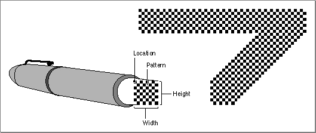
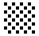
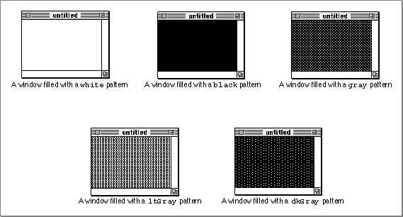
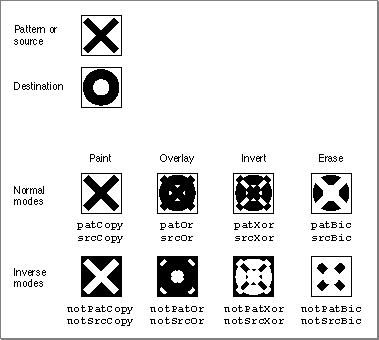

About QuickDraw Drawing
QuickDraw provides your application with routines for rapidly creating, manipulating, and drawing graphic objects such as lines, arcs, rectangles, ovals, regions, and bitmaps.These routines extract information from and affect the fields of the current graphics port, without specifically naming it as a parameter. For example, the
Moveprocedure moves the graphics pen of the current graphics port, changing the value of itspnLocfield,
and thePaintOvalprocedure paints an oval using the pattern and pattern mode of the graphics pen for the current graphics port.The previous chapter, "Basic QuickDraw," describes the basic graphics port. The next chapter, "Color QuickDraw," describes the color graphics port. The routines described in this chapter operate in both types of graphics ports.
Whenever you use QuickDraw, all drawing is performed with the graphics pen, which is described next.
The Graphics Pen
Every graphics port contains one, and only one, graphics pen with which to perform drawing operations. You use this metaphorical pen to draw lines, shapes, and text. Using QuickDraw routines, you can set these five characteristics of the graphics pen for the current graphics port:The visibility of the graphics pen simply determines whether the pen draws on the screen. You can use the
- visibility, as stored in the
pnVisfields of theGrafPortandCGrafPortrecords- size, as stored in the
pnSizefields of theGrafPortandCGrafPortrecords- location, as stored in the
pnLocfields of theGrafPortandCGrafPortrecords- pattern, as stored in the
pnPatfield of theGrafPortandCGrafPortrecords- pattern mode, as stored in the
pnModefields ofGrafPortandCGrafPortrecordsHidePenandShowPenprocedures to change the pen's visibility.The graphics pen is rectangular in shape, and its size (that is, its height and width) are measured in pixels. The default size is a 1-by-1 pixel square, but you can use the
PenSizeprocedure to change its shape from a 0-by-0 pixel square to a 32,767-by-32,767 pixel square. If you set either the width or the height to 0, however, the graphics pen does not draw. (Heights or widths of less than 0 are undefined.) Figure 3-1 illustrates a graphics pen of 8 pixels by 8 pixels.
The graphics pen can be located anywhere on the local coordinate plane of the graphics port, and there are no restrictions on the movement or placement of the pen. You can use theMoveToandMoveprocedures to change the pen's location, which is defined by the point that positions the upper-left corner of the pen. You can use theGetPenprocedure to determine the pen's current location. As shown in Figure 3-1, the pen draws below and to the right of the point specifying its location.The pattern and pattern mode determine how the bits under the pen are affected when your application draws lines or shapes. A bit pattern is a repeating 8-by-8 bit image, such as that shown in Figure 3-1. You can use the
PenPatprocedure to change the bit pattern for the graphics pen. Bit patterns are described in more detail in the next section. The pattern mode for the graphics pen determines how the bit pattern interacts with the existing bit image according to one of eight Boolean operations, as described in detail in "Boolean Transfer Modes With 1-Bit Pixels" beginning on page 3-7. You can use thePenModeprocedure to change the pattern mode of the graphics pen.To determine the size, location, pattern, and pattern mode of the graphics pen, you can use the
GetPenStateprocedure, which returns aPenStaterecord that contains fields for each of these characteristics. If you need to temporarily change these characteristics, you can use theSetPenStateprocedure to restore the graphics pen to the state saved in the record returned byGetPenState.Upon the creation of a graphics port, QuickDraw assigns these initial values to the graphics pen: a size of (1,1), a pattern of all-black pixels, and a pattern mode of
patCopy. After changing any of these values, you can use thePenNormalprocedure to return these initial values to the graphics pen."Lines and Shapes" beginning on page 3-9 describes how to use the graphics pen to draw lines and shapes.
Bit Patterns
A bit pattern is a 64-pixel image, organized as an 8-by-8 pixel square, that defines a repeating design (such as stripes) or a tone (such as gray). The patterns defined in bit patterns are usually black and white, although any two colors can be used on a color screen. Pixel patterns (which are supported only in color graphics ports) define color patterns at any pixel depth. (Pixel patterns are described in the chapter "Color QuickDraw" in this book.) Figure 3-2 shows a typical bit pattern--the one used for the standard gray desktop pattern on most Macintosh computers with black-and-white screens.
You can use bit patterns to draw lines and shapes on the screen. In a basic graphics port, the graphics pen has a pattern specified in thepnPatfield of itsGrafPortrecord. This bit pattern acts like the ink in the pen; the bits in the pattern interact with the pixels in the bitmap according to the pattern mode of the graphics pen. When you use theFrameRect,FrameRoundRect,FrameArc,FramePoly,FrameRgn,PaintRect,PaintRoundRect,PaintArc,PaintPoly, andPaintRgnprocedures to draw shapes, these procedures draw the shape with the bit pattern specified in thepnPatfield.You can use the
FillRect,FillRoundRect,FillArc,FillPoly, andFillRgnprocedures to draw shapes with a bit pattern other than that specified in thepnPatfield of the graphics port. When your application uses one of these procedures, the procedure stores the pattern your application specifies in thefillPatfield of theGrafPortrecord (or its handle in thefillPixPatfield of aCGrafPortrecord) and then calls a low-level drawing routine that gets the pattern from that field.Each graphics port also has a background pattern that's used when an area is erased (such as by using the
EraseRect,EraseRoundRect,EraseArc,ErasePoly, andEraseRgnprocedures) and when pixels are scrolled out of an area (such as by using theScrollRectprocedure as described in the chapter "Basic QuickDraw"). Every basic graphics port stores a background bit pattern in thebkPatfield of itsGrafPortrecord. (Color graphics ports store a handle to the background pattern in theirbkPixPatfield.)So that adjacent areas of the same pattern form a continuous, coordinated pattern, all patterns are always drawn relative to the origin of the graphics port.
A basic graphics port supports only bit patterns. Bit patterns are defined in data structures of type
Pattern, in which each pixel is represented by a single bit. Five such bit patterns are predefined as global variables for your use. These patterns are illustrated in Figure 3-3.Figure 3-3 Windows filled with the predefined bit patterns

The upper-left window in this figure is filled with the predefined patternwhite, in which every pixel is white. By default, this is the background pattern for a graphics port; that is, this is the pattern displayed when an area is erased or when bits are scrolled out of it. Thewhitepattern can also produce useful effects when transferred with an appropriate pattern mode to an existing bit image. (Pattern modes are explained in "Boolean Transfer Modes With 1-Bit Pixels" beginning on page 3-7.)The middle window in the top row of Figure 3-3 is filled with the predefined bit pattern
black, in which every pixel is black. This is the initial pattern that QuickDraw assigns to the graphics pen.Figure 3-3 illustrates a window filled with the predefined pattern
gray, which uses a combination of black and white pixels. As illustrated in this figure, fewer black pixels in the combination produce the predefined patternltGray, and more black pixels produce the predefined patterndkGray.These predefined patterns use colored pixels to produce similar effects in color graphics ports, as described in the chapter "Color QuickDraw."
You can create your own bit patterns in your program code, but it's usually simpler and more convenient to store them in resources of type
'PAT 'or'PAT#'and to read them in when you need them. The five predefined patterns are available not only through the global variables provided by QuickDraw but also as system resources stored in the system resource file. You can use theGetPatternfunction and theGetIndPatternprocedure to get patterns stored as resources.The result of the transfer of a pattern to a bitmap depends on the pattern mode, which is described next.
Boolean Transfer Modes With 1-Bit Pixels
A Boolean transfer mode describes an interaction between the pixels that your application draws and the pixels that are already in the destination bitmap--for example, when you draw a patterned line into a graphics port. Black-and-white drawing uses two types of Boolean transfer modes: Color QuickDraw uses Boolean transfer mode differently than basic QuickDraw. Color QuickDraw also has transfer modes that perform arithmetic operations on the red, green, and blue values of color pixels. Using transfer modes with Color QuickDraw is described in the chapter "Color QuickDraw" in this book.Your application uses source modes when using
CopyBitsprocedure (described in "Copying Bits Between Graphics Ports" beginning on page 3-28) and theCopyDeepMaskprocedure (described in the chapter "Color QuickDraw").Your application uses pattern modes to transfer patterns to lines and shapes. The
penModefield of a graphics port stores the pattern mode for the graphics pen. You use the pattern mode to draw lines, rectangles, rounded rectangles, ovals, arcs, wedges, polygons, and regions, as follows:You use the source mode when using the
- When you use a procedure like
LineTo,FrameRect, orFrameOval, the procedure draws the lines of your shape with the pattern specified in thepnPatfield of the graphics port, but the procedure transfers that pattern into the graphics port by using the pattern mode specified in thepnModefield of the current graphics port.- When you use a procedure like
PaintRectorPaintOval, the procedure draws your shape with the pattern specified in thepnPatfield by transferring the pattern with the pattern mode specified in thepnModefield.- When you use a procedure like
FillRectorFillOval, the procedure draws your shape with the pattern you request and uses thepatCopypattern mode (which copies your requested pattern directly into the shape).CopyBitsprocedure to copy a bit image from one graphics port to another and when drawing text using the QuickDraw routines described in the chapter "QuickDraw Text" in Inside Macintosh: Text. (The source mode for text is stored in thetextModefield of a graphics port.)For both pattern and source modes there are four Boolean operations: COPY, OR, XOR (for exclusive-or), and BIC (for bit clear). Each of these operations has an inverse variant in which the pattern or source is inverted before the transfer, so in fact there are eight operations in all.
The eight operations in the pattern and source modes have names defined as constants. Their effects on 1-bit destination pixels are summarized in Table 3-1. (See the chapter "Color QuickDraw" for information about the effects of these operations on colored pixels--that is, those with a pixel depth of more than 1 pixel.)
The COPY operations completely replace the pixels in the destination bitmap with either the pixels in the pattern (for the
patCopymode) or the pixels in the source bitmap (for thesrcCopymode). The inverse COPY operations completely replace the pixels in the destination bitmap with a "photographic negative" of the pattern (for thenotPatCopymode) or the source bitmap (for thenotSrcCopymode).The OR operations add the black pixels from either the pattern (for the
patOrmode) or the source bitmap (for thesrcOrmode) to the destination bitmap. The inverse OR operations (notPatOrandnotSrcOrmodes) take a "photographic negative" of the pattern or the source bitmap, and then add the black pixels from this negative to the destination bitmap.The XOR operations (
patXorandsrcXormodes) invert the pixels in the destination bitmap that correspond to black pixels in the pattern or source bitmap. The inverse XOR operations (notPatXorandnotSrcXormodes) invert the pixels in the destination bitmap that correspond to white pixels in the pattern or source bitmap.The BIC operations (
patBicandsrcBicmodes) turn pixels in the destination bitmap white when they correspond to black pixels in the pattern or source bitmap. The inverse BIC operations (notPatBicandnotSrcBicmodes) turn pixels in the destination bitmap white when they correspond to white pixels in the pattern or source bitmap.These actions are illustrated in Figure 3-4, where a black X is transferred to a destination bitmap consisting of a black O.
Figure 3-4 Examples of Boolean transfer modes

On computers running System 7, you can add dithering to any source mode by adding the following constant or the value it represents to the source mode:CONST ditherCopy = 64;Dithering mixes existing colors to create the effect of additional colors on indexed devices. It also improves images that you shrink or that you copy from a direct pixel device to an indexed device. Using dithering even when shrinking 1-bit images between basic graphics ports can produce much better representations of the original images. TheCopyBitsprocedure always dithers images when shrinking them between pixel maps on direct devices. Dithering is explained in the chapter "Color QuickDraw."The next section describes how your application uses pattern modes to transfer patterns to lines and shapes.
Lines and Shapes
As explained in the chapter "Basic QuickDraw," rectangles and regions are mathematical models that QuickDraw defines as data types. However, they also can be graphic elements that appear on the screen. A rectangle, for example, can mathematically define a visible area, but it can also be an object to draw.Defining Lines and Shapes
You use two points to define a line. Using theLineToandLineprocedures, you can draw lines onscreen using the size, pattern, and pattern mode of the graphics pen for the current graphics port. You can also define a rectangle with two points (the upper-left and lower-right corners of the rectangle) or with four boundary coordinates (one for each side of the rectangle). Using theFrameRectprocedure, you can draw rectangles that are framed by lines rendered with the size, pattern, and pattern mode of the graphics pen.You use rectangles to define ovals and rounded rectangles. Rectangles used to define other shapes are called bounding rectangles. The lines of bounding rectangles completely enclose the shapes they bound; in other words, no pixels from these shapes lie outside the infinitely thin lines of the bounding rectangles.
Ovals are circular or elliptical shapes defined by the height and width of their bounding rectangles, and rounded rectangles are rectangles with rounded corners defined by the width and height of the ovals forming their corners. Using the
FrameOvalandFrameRoundRectprocedures, you can draw, respectively, framed ovals and framed rounded rectangles.You can use rectangles to define ovals that, in turn, you can use to define arcs and wedges. An arc is a portion of an oval's circumference bounded by a pair of radii. A wedge is a pie-shaped segment of an oval. The wedge starts at the center of the oval, is bounded by a pair of radii, and extends to the oval's circumference. You use the
FrameArcprocedure to draw a framed arc, and you use thePaintArcorFillArcprocedure to draw a wedge.You use lines to define a polygon. First, however, you must call the
OpenPolyfunction and then some number ofLineToprocedures to create lines from the first vertex of the polygon to the second, from the second to the third, and so on, until you've created a line to the last vertex. You then use theClosePolyprocedure, which completes the figure by drawing a connecting line from the last vertex back to the first. After defining a polygon in this way, you can draw a framed outline of it using theFramePolyprocedure.To define a region, you can use any set of lines or shapes, including other regions, so long as the region's outline consists of one or more closed loops. First, however, you must call the
NewRgnfunction andOpenRgnprocedure. You then use line-, shape-, or region-drawing commands to define the region, which can be concave or convex, can consist of one connected area or many separate ones, and can even have holes in the middle. When you are finished collecting commands to define the outline of the region, you use theCloseRgnprocedure. You can then draw a framed outline of the region using theFrameRgnprocedure.Framing Shapes
Using theFrameRect,FrameOval,FrameRoundRect,FrameArc,FramePoly, orFrameRgnprocedure to frame a shape draws just its outline, using the size, pattern, and pattern mode of the graphics pen for the current graphics port. The interior of the shape is unaffected, allowing previously existing pixels in the bit image to show through.Painting and Filling Shapes
Using thePaintRect,PaintOval,PaintRoundRect,PaintArc,PaintPoly, orPaintRgnprocedure to paint a shape draws both its outline and its interior with the pattern of the graphics pen, using the pattern mode of the graphics pen.Using the
FillRect,FillOval,FillRoundRect,FillArc,FillPoly, orFillRgnprocedure to fill a shape draws both its outline and its interior with any pattern you specify. The procedure transfers the pattern with thepatCopypattern mode, which directly copies your requested pattern into the shape.Erasing Shapes
Using theEraseRect,EraseOval,EraseRoundRect,EraseArc,ErasePoly, orEraseRgnprocedure to erase a shape draws both its outline and its interior with the background pattern for the current graphics port. The background pattern is typically solid white on a black-and-white monitor or a solid background color on a color monitor. Making the shape blend into the background pattern of the graphics port effectively erases the shape.Inverting Shapes
Using theInvertRect,InvertOval,InvertRoundRect,InvertArc,InvertPoly, orInvertRgnprocedure to invert a shape reverses the colors of all pixels within its boundary. On a black-and-white monitor, this changes all the black pixels in the shape to white and changes all the white pixels to black.The inversion procedures were designed for 1-bit images in basic graphics ports. These procedures operate on color pixels in color graphics ports, but the results are predictable only with direct devices or 1-bit pixel maps.
For indexed pixels, Color QuickDraw performs the inversion on the pixel indexes. The results depend entirely on the contents of the video device's color lookup table (CLUT). (The CLUT is described in the chapter "Color QuickDraw.")
The eight colors used in basic QuickDraw are stored in a color table represented by the global variable
QDColors. To display those eight basic QuickDraw colors on an indexed device, Color QuickDraw uses the Color Manager to obtain indexes to the colors in the CLUT that best map to the colors in theQDColorscolor table. Because the index, not the color value, is inverted, the results are again unpredictable. (The eight-color system is described in "The Eight Basic QuickDraw Colors" beginning on page 3-12.)Inversion works better for direct devices. Inverting a pure green, for example, that has red, green, and blue component values of $0000, $FFFF, and $0000 results in magenta, which has component values of $FFFF, $0000, and $FFFF.
Other Graphic Entities
"Drawing With QuickDraw" beginning on page 3-14 provides an introduction to creating and drawing lines, rectangles, rounded rectangles, ovals, arcs, wedges, polygons, and regions. You can also use QuickDraw routines to draw pictures, cursors, icons, and text.A QuickDraw picture is the recorded transcription of a sequence of drawing operations that can be played back with the
DrawPictureprocedure. See the chapter "Pictures" for information about creating and displaying QuickDraw pictures.A cursor is a 16-by-16 pixel image that maps the user's movement of the mouse to relative locations on the screen. An icon is an image (usually 32 by 32 or 16 by 16 pixels) that represents an object, a concept, or a message. For example, the Finder uses icons to represent files and disks. Cursors and icons are stored as resources. See the chapter "Cursor Utilities" for information about drawing cursors. See the chapter "Icon Utilities" in Inside Macintosh: More Macintosh Toolbox for information about drawing icons.
See the chapter "QuickDraw Text" in Inside Macintosh: Text for information about using QuickDraw routines to draw text.
The Eight Basic QuickDraw Colors
On a color screen, you can draw with colors, even when you are using a basic graphics port. Although basic QuickDraw graphics routines were designed for black-and-white drawing, they also support the eight-color system that basic QuickDraw predefines for display on color screens and color printers. Because Color QuickDraw also supports this system, it is compatible across all Macintosh platforms. (This section describes the rudimentary color capabilities included in basic QuickDraw. See the next chapter, "Color QuickDraw," for information about more sophisticated color use in your application.)A pair of fields in a graphics port,
fgColorandbkColor, specify a foreground and background color. The foreground color is the color used for bit patterns and for the graphics pen when drawing. By default, the foreground color is black. The background color is the color of the pixels in the bitmap wherever no drawing has taken place. By default, the background color is white. However, you can use theForeColorandBackColorprocedures to change these fields. (When printing, however, use theColorBitprocedure to set the foreground color.) For example, on a color screen the following lines of code draw a red rectangle against a blue background.BackColor(blueColor); {make a blue background} ForeColor(redColor); {draw with red ink} PenMode(patCopy); {when drawing, replace background color } { with ink's color} PaintRect(20,20,80,80); {create and paint the red rectangle}If you use theOpenCPictureorOpenPicturefunction to include this code in a picture definition, these colors are stored in the picture. However, basic QuickDraw cannot store these colors in a bitmap. See the chapter "Pictures" in this book for more information about defining and drawing pictures.The basic QuickDraw color values consist of 1 bit for normal black-and-white drawing (black on white), 1 bit for inverted black-and-white drawing (white on black), 3 bits for the additive primary colors (red, green, blue) used in video display, and 4 bits for the subtractive primary colors (cyan, magenta, yellow, black) used in printing. QuickDraw includes a set of predefined constants for those standard colors:
CONST �whiteColor =�30; �blackColor = 33 �yellowColor = 69; magentaColor =�137; �redColor =�205; �cyanColor =�273; �greenColor =�341; �blueColor =�409;These are the only colors available in basic QuickDraw (or with Color QuickDraw drawing into a basic graphics port). When you specify these colors on a Macintosh computer with Color QuickDraw, Color QuickDraw draws these colors if the user has set the screen to a color mode.These eight color values are based on a planar model: each bit position corresponds to a different color plane, and the value of each bit indicates whether a particular color plane should be activated. (The term color plane refers to a logical plane, rather than a physical plane.) The individual color planes combine to produce the full-color image.
There are three advantages to using basic QuickDraw's color system:
The main disadvantage is that basic QuickDraw is limited to eight predefined colors. Another problem is that, if the graphics port in which you are working happens to be a color graphics port, then the two color systems may clash. For example, saving the current foreground color (from the
- It is available across all platforms, so you don't have to check for the presence of Color QuickDraw.
- It is much simpler to use than Color QuickDraw.
- It works well on an ImageWriter printer with a color ribbon.
fgColorfield of the color graphics port) and then later restoring it with theForeColorprocedure doesn't work: the original content of thefgColorfield is an index value for a color graphics port using indexed colors. This index value is not what basic QuickDraw'sForeColorprocedure expects as a parameter.In System 7, these Color QuickDraw routines are available to basic QuickDraw:
RGBForeColor,RGBBackColor,GetForeColor, andGetBackColor. Described in the next chapter, "Color QuickDraw," these routines can also assist you in manipulating the eight-color system of basic QuickDraw. When running on a System 7 computer, your application should useGetForeColorandGetBackColorto determine the foreground color and background color instead of checking thefgColorandbkColorfields of theGrafPortrecord.The next section provides an introduction to creating and drawing lines and shapes. Without using a color graphics port, you can use the
ForeColororRGBForeColorprocedure on a color screen to draw these lines and shapes in color, against the background color you set with theBackColororRGBBackColorprocedure.